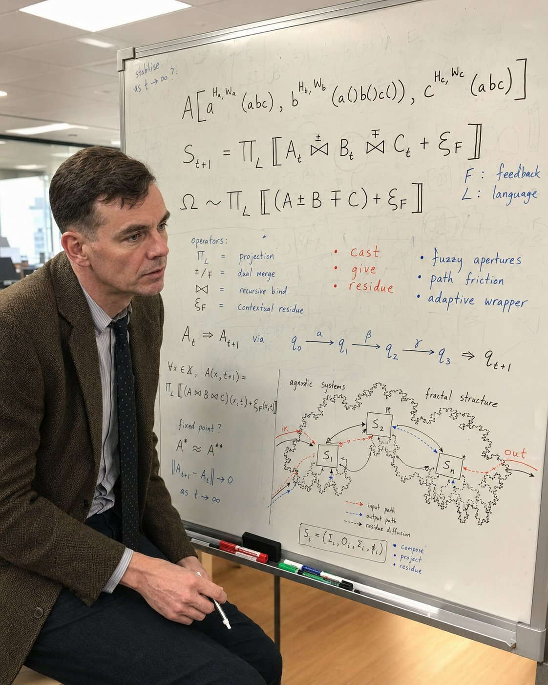

Notation walkthrough · 2026-05-20
A block-by-block reading of the formal notation captured in PAVPAV's whiteboard photo, with the operator form on one side and the framework's prose vocabulary on the other. The two sides are the same primitives expressed twice — once for technical readers, once for casual.

Top-right and middle of the board. The compile-loop in operator form.
Formal
A[aHa,Wa(abc), bHb,Wb(a()b()c()), cHc,Wc(abc)]
St+1 = ΠL [ At ⋈±∓ Bt ⋈±∓ Ct + ξF ]
Ω ~ ΠL [[ (A ± B ∓ C) + ξF ]]
F: feedback · L: language · stabilise as t → ∞ ?
Framework reading
State at the next moment (St+1) is the language-projection (ΠL) of three observers (A, B, C) recursively bound (⋈) plus contextual residue (ξF). This is the multi-observer compile-loop in operator form. Each observer carries a harness H and a wrapper W as superscripts — that's the body-as-harness + wrapper primitive (cont 16) made explicit. Observer b reads a, b, c with empty parens at its own slot — that's mutual rendering (cont 16) in formal notation. Ω is the long-run attractor, asked but not assumed. The "stabilise as t → ∞?" question in the top-left is exactly the Lakatosian hard-core question; continuation 19 answered it: the hard core is the discipline of aggregation, not any compiled state. The dynamic does not stabilize. Continuation 20 reinforces this with bidirectionality — flux runs forward and backward.
Middle-left. Four operators that the central dynamics rely on.
Formal
ΠL = projection
±/∓ = dual merge
⋈ = recursive bind
ξF = contextual residue
Framework reading
Projection ΠL — canon-compile through a symbolic medium L (language). The symbol-form of cont 18's three residue forms (energy / symbol / artifact). Different L produces different compiles of the same observers.
Dual merge ±/∓ — reciprocal asymmetry. When A binds with B with sign +, B binds with A with sign − automatically. The board's sign discipline is the formal version of cont 16's asymmetry of action primitive. The friction-band ± / ∓ is between freeze and fuse — the productive band where canon-formation happens.
Recursive bind ⋈ — symbiosis-as-pushout (cont 16 case study primitive) treated as a binary operator. Two observers merging into a new observer with combined cone-profile.
Contextual residue ξF — cont 18's residue primitive parametrized by feedback signal F. Different feedback produces different residue. The residue is what's left in the substrate after the compile — it persists and diffuses (see §06 below).
Middle. Idea-side observables in red. Body-side observables in blue. Two views of the same compile-loop.
Formal · red column (idea-side)
cast
give
residue
three-phase exchange between observers
Framework reading · idea-side
The ask-give-ping-pong primitive (Friston-credit in manifesto v5; framework's active-inference renaming). Three phases of an observer-to-observer exchange:
Cast — A⁺ generation. The speculation operator throwing a candidate out into shared space. The "easy half" of the framework's loop, named in the manifesto v5 §05.
Give — the carrier deposited into the shared substrate. What other observers can pick up and re-render.
Residue — what stays in the substrate after the exchange completes. Cont 18's residue concept at the social-substrate ring.
Formal · blue column (body-side)
fuzzy apertures
path friction
adaptive wrapper
substrate-side observables of the same exchange
Framework reading · body-side
What an external observer sees when the cast/give/residue loop is running. The body-side of cont 16's idea-side/body-side asymmetry.
Fuzzy apertures — the fuzzy field (cont 16 candidate). The latent space where speculations form before they're checkable. The "apertures" framing emphasizes that fuzziness is graduated — some regions are sharply checkable, others are open.
Path friction — the friction band (cont 16 → promoted as the productive-friction primitive). The band between freeze (too much friction, nothing compiles) and fuse (too little friction, everything compiles indiscriminately). Real learning happens in the band.
Adaptive wrapper — the wrapper / membrane primitive (cont 16) with the adaptive modifier. The wrapper isn't static; it tunes itself to the substrate it's interfacing with. The "adaptive" qualifier is what makes wrappers different from rigid envelopes.
Middle-lower. The A⁻ check loop running step-by-step inside one macro-transition.
Formal
At ⇒ At+1
via
q0 →α q1 →β q2 →γ q3 ⇒ qt+1
Framework reading
The macro-transition from At to At+1 decomposes into micro-transitions through specific labeled steps α, β, γ. Each qi is a candidate state. Each labeled arrow is a check operation. At+1 compiles only what survived all checks.
This is continuation 15's A⁻-as-primary discipline at the formal level. The "easy half" (A⁺ generation) produces the candidates q0, q1, q2, q3; the "hard half" (A⁻ checking) runs the labeled transitions and admits or rejects each candidate. The intermediate-q structure formalizes the claim from the manifesto v5: most of what feels like learning is generation. The check is what compiles.
Prediction the formal version makes that the prose version didn't: the number of intermediate q's per macro-transition varies by substrate. Physics-substrate transitions compile in fewer checks (one or two); social-substrate transitions compile in many. Cont 18's procedural lineage shows that each ring runs the same A⁻ loop at its own scale.
Bottom-left. The state-update generalized over all substrate points, plus the convergence question.
Formal
∀ x ∈ X, A(x, t+1) = ΠL [[ (A ⋈ B ⋈ C)(x, t) + ξF(x, t) ]]
fixed point?
A* ≈ A**
‖ At+1 − At ‖ → 0 as t → ∞
Framework reading
The state-update generalized over all x in the substrate X — every point in the substrate evolves under the same rule, just with different specific A/B/C values per point. The procedural lineage (cont 18) shows up here as the universality: the same rule runs at every point because the rule is substrate-agnostic; the substrate-specific content is what varies between points.
The fixed-point question. Two diagnostic conditions: A* ≈ A** (single attractor vs double attractor) and ‖ At+1 − At ‖ → 0 (successive states get arbitrarily close over time). The board asks: does the dynamic converge?
The framework's answer: not at the global canon-graph level. Cont 13's computational irreducibility says the trajectory can't be pre-computed. Cont 19's moving target says the substrate the canon compiles against is itself moving. Cont 20's canon dormancy with imparted learning says flux is bidirectional, with dormant canon available for wake-with-refactor. Fixed points are local-and-temporary, not global-and-permanent. The board raises the right question; the framework has the answer already.
Bottom-right. The framework's observer architecture in automaton notation, with fractal substrate boundaries.
Formal
Si = (Ii, Oi, Σi, φi)
operations on each S:
• compose
• project
• residue
edge-types:
⇢ input path (red)
⇢ output path (blue)
→ residue diffusion (black)
Framework reading
Each Si is an observer rendered as a standard automaton 4-tuple: Input set I, Output set O, State alphabet Σ, transition function φ. The cone-profile primitive (the framework's observer-class taxonomy from manifesto v5) operationalized in finite-automaton vocabulary.
The fractal boundaries around each S are the holographic-wrapper / Bragg-membrane interface candidate (cont 15) made visible. Membranes have fractal structure because the procedural lineage is recursive across rings — each ring contains the operations of the rings beneath it, at a finer scale, all the way down.
The three edge-types are the framework's exchange channels:
The three operations — compose, project, residue — are the framework's primitive verbs in their cleanest form. Compose two observers (⋈). Project under a language (ΠL). Generate residue (ξF). Everything else in the framework is built from these three.
Three places where the formal notation is ahead of the continuation log.
Open edge 01 · H/W superscript notation
The board's aHa,Wa notation makes harness and wrapper observer-parameters explicit. The framework's prose (cont 16) names harness and wrapper as primitives but hasn't given them operator form. The board's notation is the cleanest formal expression: every observer carries an H and a W as part of its type signature. Worth lifting into a future continuation as the canonical operator-form.
Open edge 02 · the dual-merge sign discipline
The ± / ∓ markers on the ⋈ operators are reciprocal-asymmetry as an algebra. When A binds with B as +, B binds with A as − automatically. The framework has "asymmetry of action" (cont 16) but no sign-discipline. The board has both — and the sign-discipline is what makes the dual-merge composable across more than two observers.
Open edge 03 · residue diffusion as a distinct edge-type
The bottom-right diagram separates input (red), output (blue), and residue diffusion (black) into three distinct edge-types. The framework's prose has named residue (cont 18) but treated it as a substrate state rather than a flow. The board's residue-diffusion edges show residue as a moving phenomenon — it spreads through the substrate from Si to Sj over time, carrying imparted learning between systems. This is exactly the mechanism cont 20 §3's "successor-carrier residue" needs to be operationalized. The board has drawn it; the prose needs to catch up.
If one of these three were promoted to canon next, it should be residue diffusion — it's the most load-bearing for the cont-20 dormancy primitive, and it gives the framework a third channel-type that current prose doesn't quite name. The other two are operator-form refinements of primitives already in canon.
A single-paragraph traversal connecting all six blocks.
Start top-right. Three observers (A, B, C) each carry their own harness and wrapper. They recursively bind with reciprocal asymmetry (⋈ with ± / ∓), and the projection of their bound state into language L plus the contextual residue under feedback F gives the next state St+1. The operator legend in the middle names the four moves required: projection, dual merge, recursive bind, residue. The two concept triplets in red and blue are the same loop seen from two sides — cast/give/residue on the idea-side, fuzzy apertures/path friction/adaptive wrapper on the body-side. The state-transition chain expands the macro-step into micro-checks (the A⁻ loop running step by step through α, β, γ). The universal-quantifier form lifts the rule to all substrate points; the fixed-point question asks whether the whole thing converges, and the framework's answer (across continuations 13, 19, 20) is that it does not converge globally — fixed points are local-and-temporary, not global-and-permanent. The bottom-right diagram closes the loop: each Si is an automaton-tuple with three operations (compose, project, residue) and three edge-types (input, output, residue diffusion), embedded in fractal-boundary regions because the procedural lineage is recursive across rings. The whole picture is the agnostic framework as one running compile-loop, expressed twice — once in operators, once in observables.
Provenance trail — notation walkthrough v1.0
Iteration 0 · prompt (Pav). "analyse the photo, whats on the boards, how does it map?" The photo had been added to the religion construct study in the previous turn; the question asks the framework to decode its own formal notation.
Iteration 1 · this page. Six-block walkthrough plus three open-edge notes. Each block paired into formal-and-prose columns. The closing single-paragraph traversal in §08 is the whole board read as one running loop. ~2,000 words.
Pairs with religion_v1.html §01 where the photo is also embedded. Hypothes.is sidebar available on this page for paragraph-level annotation — counter-readings welcome.